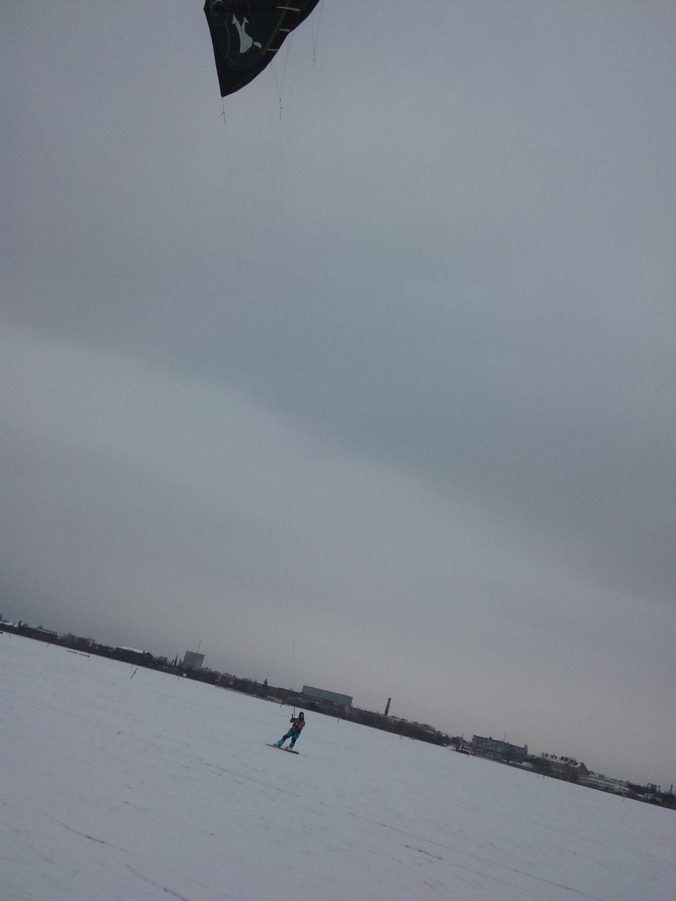

cc 2001 - 2010 Benjamin Birkenhake Digital ist besser
Ich war ja gewarnt. Der Winter kam schnell und hart. Aber wie das so ist, mit den meisten Gräulichkeiten - Vorbereitetsein nimmt den Dingen den Schrecken. Also hab ich erstmal Springerstiefel und einen BW-Parker gekauft. Und dann raus nach Tempelhof!
Da ist alles wie gehabt. Die Weite ist noch da. Nur jetzt weiß. Der Wind ist auch noch da. Nur jetzt sibirsch kalt. Und die Jungs mit den großen Drachen sind auch noch da. Nur jetzt mit Snowboards unter ihren Füßen …

… leise Bahnen über das Feld ziehend, während die wenigen Spaziergänger sich verschworen anlächeln und weiter durch den Schnee arbeiten. Und der Westwind versucht verzweifelt uns etwas anzuhaben. Übungen gegen die Kälte aus dem Innern.
Und abensd wärmt der Projektor mir Heim und Herz. Winter in Berlin, wenn das mit Dir so weitergeht, dann werden wir noch dicke Freunde.
Kommentare